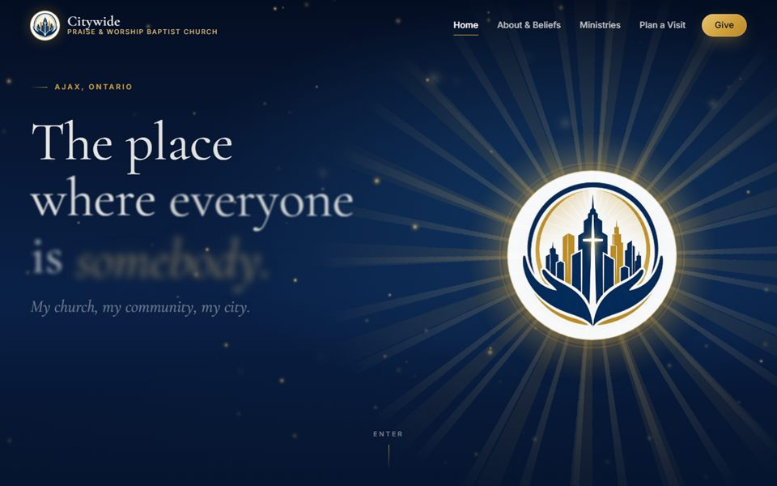

Open full screenDesign 1
Sanctuary Light
Cinematic and reverent. The page feels like light pouring into a dark sanctuary, with the emblem at the centre of golden rays.
Motion
- Slowly turning light rays and drifting specks of gold light
- The headline appears word by word
- A candlelit band for Matthew 28:19–20